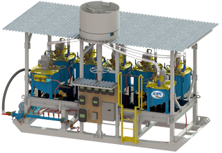
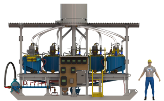
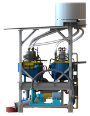

iCON IGR 6x7 Battery Plant
iCON Gold Recovery Corp. is proud to present:
IGR 6x7 Battery Plant
Specifically designed for Pre-Classified Slurry
The iCON Battery Plant was designed by real miners working in remote regions of the world.
It utilizes the i350 concentrator which has become the World Wide placer mining standard for fine gold.
Gold concentrators are ‘batch’ machines. This means you must occasionally divert the feed to rinse the rich concentrate.
In a system with only 1 concentrator, you either ‘by-pass’ to tails or to a tank/slurry pump that recirculates the slurry back to a head tank.
A system having 2 concentrators would allow to you to always feed 1 out of the 2. This is inefficient. A system feeding 2 concentrators while rinsing a third becomes financially viable when using the economical i350. A battery feeding 6 while rinsing the 7th is very efficient and cost effective.
The iCON Rotary Distributor allows easy distribution of the slurry and sequential rinsing without complicated industrial valves and/or controls. The distributor is hand operated.
Features
|
|
Benefits
|
|
Capacity
|
Intended for a 100 tph Alluvial Plant
|
|  |  |
The Handwheel is rotated periodically to sequentially isolate 1 concentrator while the other 6 are actively fed.
This operation is intuitive and easy for an operator anywhere in the world.
What's Included |
|
| Seven (7) | i350 Concentrators with VFD and push button start/stop |
| One (1) | iPump used as a concentrate pump with VFD and push button start/stop |
| One (1) | 6x7 Rotary Distributor with Manual Handwheel |
| One (1) | Extra Heavy Duty Skid Structure |
| All plumbing and wiring within the envelope of the plant | |
| Tails launder designed for gravity discharge | |
What's Not Included as Standard Equipment |
|
| Electrical Generator | |
| Process water booster pump |
Optional Equipment |
|
| Dewatering/Desliming Cyclones | |
| Slurry Transfer Pump | |
| Process Water Pump |
iCON Gold Recovery offers six kinds of Mineral Processing Plants.
Click below for more information on each:
iCON IGR 100 Plant - iCON IGR 500 Plant - iCON IGR 1000 Plant
iCON IGR 3000 Plant - iCON IGR 6x7 Battery Plant - iCON IGR 10K Alluvial Plant
Click below to view all of the iCON Gold Recovery Product lines:
Product Overview - iCON Concentrators
iCON Pumps - iCON Screens - iCON Plants